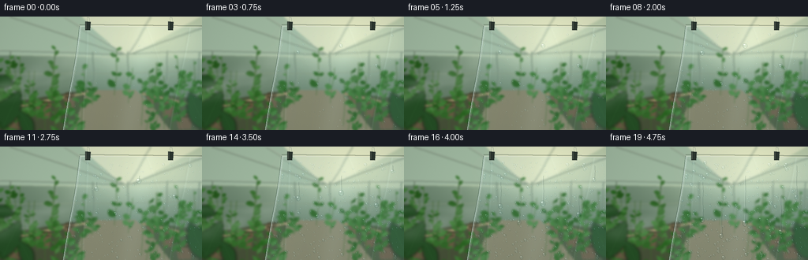
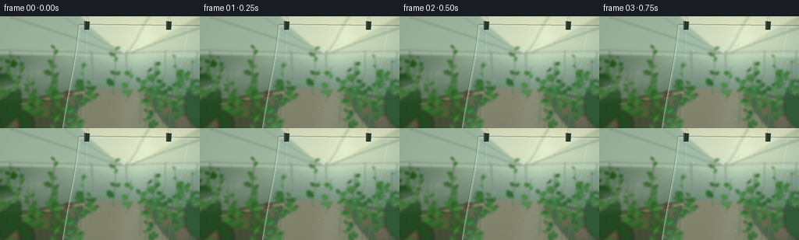

CODING AGENTS AS PIXEL WORLD MODELS
traex/GPT-6.1-Sol · phygen_104
点击播放 · 原生 RGB 像素
逐轮保存的候选
回放视频、检查图与代码变化。
每份候选均可单独播放。实际图片检查记录在下方工具轨迹中。
候选 01播放与检查图
点击播放 · 原生 RGB 像素

展开代码变化
--- 上一保存版本
+++ 本次保存版本
@@ -0,0 +1,222 @@
+"""Procedural greenhouse condensation timelapse, no external assets."""
+from pathlib import Path
+import numpy as np
+from PIL import Image, ImageDraw, ImageFilter
+import artifact_io
+
+ROOT = Path(__file__).resolve().parent
+W,H,S = 256,144,3
+WW,HH = W*S,H*S
+rng = np.random.default_rng(104)
+
+def points(p): return [(int(x*S),int(y*S)) for x,y in p]
+def line(d,p,c,w=1): d.line(points(p),fill=c,width=max(1,int(w*S)))
+def poly(d,p,c): d.polygon(points(p),fill=c)
+def ellipse(d,b,c): d.ellipse(tuple(int(v*S) for v in b),fill=c)
+
+def leaf(d,x,y,l,w,angle,color):
+ dx,dy=np.cos(angle),np.sin(angle)
+ nx,ny=-dy,dx
+ p=[]
+ for t in np.linspace(0,1,13):
+ z=np.sin(np.pi*t)**.83*w
+ p.append((x+l*dx*t+z*nx,y+l*dy*t+z*ny))
+ for t in np.linspace(1,0,13):
+ z=np.sin(np.pi*t)**.83*w
+ p.append((x+l*dx*t-z*nx,y+l*dy*t-z*ny))
+ poly(d,p,color)
+ line(d,[(x,y),(x+l*dx*.94,y+l*dy*.94)],tuple(min(255,int(c*1.18)) for c in color),.25)
+
+def make_background():
+ yy,xx=np.mgrid[0:HH,0:WW]/S
+ bright=np.exp(-((xx-173)/102)**2-((yy-20)/56)**2)
+ arr=np.empty((HH,WW,3))
+ for k,(a,b) in enumerate([(112,99),(137,94),(116,87)]): arr[:,:,k]=a+b*bright-yy*.19
+ bg=Image.fromarray(np.clip(arr,0,255).astype('uint8'))
+ d=ImageDraw.Draw(bg)
+ # Back glazed wall and roof, structural bays converging into the greenhouse.
+ poly(d,[(0,0),(256,0),(256,53),(0,49)],(177,195,166))
+ poly(d,[(0,0),(103,0),(154,48),(0,49)],(159,184,160))
+ poly(d,[(104,0),(254,0),(166,48),(153,48)],(209,217,187))
+ for p in [[(0,43),(154,47),(256,44)],[(12,0),(155,47)],[(81,0),(157,47)],[(191,0),(161,47)],[(256,13),(164,47)]]:
+ line(d,p,(99,120,102),1.7)
+ line(d,[(x,y-.6) for x,y in p],(222,229,207),.7)
+ for x in [13,70,117,160,210,252]:
+ line(d,[(x,44),(x,129)],(101,124,106),1.6)
+ line(d,[(x+1,44),(x+1,130)],(196,207,177),.55)
+ for y in [73,104]: line(d,[(0,y),(256,y-3)],(133,149,122),1)
+ # Warm sun filtering through the far panes.
+ glow=np.zeros((HH,WW,4),dtype=np.uint8)
+ alpha=55*np.exp(-((xx-197)/61)**2-((yy-31)/25)**2)
+ glow[:,:,:3]=[255,245,208];glow[:,:,3]=alpha.astype('uint8')
+ bg=Image.alpha_composite(bg.convert('RGBA'),Image.fromarray(glow))
+ d=ImageDraw.Draw(bg)
+ # Raised beds, pots, aisle.
+ poly(d,[(102,93),(170,92),(228,144),(69,144)],(131,127,100,255))
+ poly(d,[(0,111),(108,93),(89,144),(0,144)],(70,80,56,255))
+ poly(d,[(178,95),(256,106),(256,144),(218,144)],(72,87,60,255))
+ line(d,[(0,118),(109,97)],(170,151,111,255),3)
+ line(d,[(178,97),(256,115)],(151,134,96,255),3)
+ for x,y,r in [(20,132,12),(55,119,10),(87,108,6),(236,133,11),(213,117,8),(190,106,5)]:
+ poly(d,[(x-r,y-9),(x+r,y-9),(x+r*.7,y+10),(x-r*.7,y+10)],(104,90,67,255))
+ ellipse(d,(x-r,y-12,x+r,y-5),(65,63,43,255))
+ line(d,[(x-r,y-8),(x+r,y-8)],(151,126,89,255),1.2)
+ # A dense tangle of vegetable foliage at several depths.
+ for i in range(84):
+ x=rng.uniform(-18,280);y=rng.uniform(95,158)
+ if 102<x<176 and y>114: continue
+ height=rng.uniform(22,68)
+ stemcol=(66,103,48,255)
+ x0=x+rng.uniform(-6,6)
+ line(d,[(x,y),(x0,y-height)],stemcol,.7)
+ for j in range(rng.integers(5,10)):
+ f=rng.uniform(.1,.99)
+ ly=y-f*height;lx=x+(x0-x)*f
+ side=1 if j%2==0 else -1
+ ang=(-.22-rng.uniform(0,.7)) if side==1 else (np.pi+.2+rng.uniform(0,.7))
+ l=rng.uniform(5,15)*(1-.4*f)
+ base=np.array([51,99,42])+rng.uniform(-16,22)+np.array([0,rng.uniform(0,12),0])
+ leaf(d,lx,ly,l,l*rng.uniform(.18,.35),ang,tuple(np.clip(base,0,255).astype(int))+(255,))
+ # Out-of-focus foreground leaves for depth.
+ fg=Image.new('RGBA',(WW,HH));fd=ImageDraw.Draw(fg)
+ for x,y,l,w,a in [(-10,132,46,11,-.7),(2,143,54,12,-1.13),(41,153,36,9,-2),(264,147,55,13,-2.0),(-12,79,30,8,.2)]:
+ leaf(fd,x,y,l,w,a,(37,78,37,255))
+ bg=Image.alpha_composite(bg,fg.filter(ImageFilter.GaussianBlur(1.3*S)))
+ bg=bg.convert('RGB').filter(ImageFilter.GaussianBlur(1.25*S))
+ a=np.asarray(bg).astype(float)
+ # Smooth bloom from the sun, and subtle photographic texture.
+ for k,v in enumerate([14,13,6]): a[:,:,k]+=v*np.exp(-((xx-193)/59)**2-((yy-25)/39)**2)
+ return np.clip(a,0,255)
+
+bg=make_background()
+Y,X=np.mgrid[0:HH,0:WW].astype(float)/S
+# Thin, suspended, lightly buckled plastic. The left edge has a shallow bow.
+left=101.5-.147*(Y-10)+1.3*np.sin(Y/29)
+mask=(X>left)&(Y>11.5+.012*(X-103))
+maskf=mask.astype(float)
+# The same background is visible through the film, slightly softened and warped.
+blur=np.asarray(Image.fromarray(bg.astype('uint8')).filter(ImageFilter.GaussianBlur(.34*S))).astype(float)
+shiftx=(2*np.sin(X*.019+Y*.024)+.5*np.sin(Y*.15))*S
+shifty=(.7*np.sin(X*.041-Y*.017))*S
+bx=np.clip((X*S+shiftx).astype(int),0,WW-1)
+by=np.clip((Y*S+shifty).astype(int),0,HH-1)
+film=blur[by,bx].copy()
+# Plastic is not glass: broad surface waviness and a few faint tension creases.
+reflect=4+4*np.sin((X+.19*Y)/33)+9*np.exp(-((X-189+.19*Y)/15)**2)
+film=film*.925+np.array([9,14,15])+reflect[:,:,None]*np.array([.72,.86,1.0])
+for origin,slope,amp in [(111,-.035,7),(243,-.19,8),(181,.36,3)]:
+ dist=X-origin-slope*Y-1.1*np.sin(Y/26)
+ film+=np.exp(-(dist/1.05)**2)[:,:,None]*np.array([amp*.9,amp,amp*1.15])
+ film-=np.exp(-((dist+1.5)/1.5)**2)[:,:,None]*(amp*.38)
+base=np.where(mask[:,:,None],film,bg)
+
+# Droplet nucleation, with persistent locations and increasing volume.
+drops=[]
+for i in range(650):
+ x=rng.uniform(87,255);y=rng.uniform(19,144)
+ if x <101.5-.147*(y-10)+4: continue
+ onset=rng.uniform(-.11,.85)
+ if i<180: onset=rng.uniform(-.14,.34)
+ radius=rng.uniform(.5,1.35)
+ if rng.random()<.16: radius=rng.uniform(1.4,2.3)
+ drops.append((x,y,onset,radius,rng.uniform(.83,1.08)))
+# Prominent beads that gather smaller droplets then drain under gravity.
+runners=[(122,45,3.0,.36,48),(176,37,3.5,.44,60),(221,62,3.0,.53,46),(146,85,2.8,.64,28),(241,24,2.4,.60,40)]
+fixedgrain=rng.normal(0,.50,(HH,WW,1))
+
+def bead(arr,cx,cy,r,stretch=1.0,strength=1.0):
+ if r<.12:return
+ ry=r*stretch
+ x0=max(0,int((cx-r-1)*S));x1=min(WW,int((cx+r+1)*S)+1)
+ y0=max(0,int((cy-ry-1)*S));y1=min(HH,int((cy+ry+1)*S)+1)
+ if x0>=x1 or y0>=y1:return
+ xx=X[y0:y1,x0:x1];yy=Y[y0:y1,x0:x1]
+ nx=(xx-cx)/r;ny=(yy-cy)/ry
+ q=nx*nx+ny*ny
+ inside=q<1
+ # A small water lens refracts the plant colours behind it.
+ z=np.sqrt(np.clip(1-q,0,1))
+ sx=np.clip(((cx+nx*r*.62+nx*z*1.9*r)*S).astype(int),0,WW-1)
+ sy=np.clip(((cy+ny*ry*.58+ny*z*1.2*r)*S).astype(int),0,HH-1)
+ sample=base[sy,sx]
+ rim=np.exp(-((np.sqrt(q)-.91)/.085)**2)
+ # Fresnel outline is dark on the bottom/right and lit at the top/left.
+ shade=-(17+17*np.maximum(0,ny+nx*.35))*rim+6*z
+ col=sample*.91+np.array([7,12,13])+shade[:,:,None]
+ glint=np.exp(-((nx+.34)/.17)**2-((ny+.43)/.13)**2)
+ broad=np.exp(-((nx+.32)/.47)**2-((ny+.53)/.16)**2)
+ caustic=np.exp(-((nx-.19)/.43)**2-((ny-.66)/.13)**2)
+ col+=glint[:,:,None]*125+broad[:,:,None]*31+caustic[:,:,None]*37
+ alpha=np.clip((1-q)*r*S*2,0,1)*inside*strength
+ patch=arr[y0:y1,x0:x1]
+ patch[:]=patch*(1-alpha[:,:,None])+np.clip(col,0,255)*alpha[:,:,None]
+
+# Smooth advecting mist volume, represented as a sum of wispy Fourier cloud bands.
+def mist(t):
+ # A steady humid plume flows from the warm lower-left toward the film.
+ center=92-16*np.sin(X/71-t*2.0)-.13*X
+ envelope=np.exp(-((Y-center)/(12+X*.08))**2)*np.exp(-((X-68)/122)**2)
+ texture=(.51+.19*np.sin(X*.062+Y*.084-t*3.1)+.13*np.sin(X*.11-Y*.139-t*2.3)+.08*np.sin(X*.191+Y*.083-t*3.8))
+ wisps=np.exp(-((Y-(87-.16*X+7*np.sin(X/30-t*1.9)))/4.1)**2)
+ wisps+=.55*np.exp(-((Y-(105-.23*X+4*np.sin(X/26-t*2.1)))/5.5)**2)
+ return np.clip(.23*envelope*texture+.075*wisps*np.exp(-X/170),0,.25)
+
+def render(t):
+ a=base.copy()
+ # Condensation first forms a fine cloudy film, and then gathers into water beads.
+ fog=(.012+.055*t)*maskf*(.65+.35*np.sin(X*.018+Y*.02)**2)
+ a=a*(1-fog[:,:,None])+np.array([198,217,214])*fog[:,:,None]
+ # Microdroplets, with smoothly staggered births, remain attached to the surface.
+ for x,y,onset,r,elong in drops:
+ age=max(0,(t-onset)/(1-onset))
+ if age==0:continue
+ radius=r*(.17+.90*np.sqrt(age))
+ # A sliding bead collects water on its route, leaving a narrow clean wake.
+ eaten=False
+ for rx,ry,rr,start,travel in runners:
+ if t>start:
+ pos=ry+travel*((t-start)/(1-start))**1.6
+ if abs(x-rx)<rr*.8 and ry-rr<y<pos+rr and y>ry-rr:eaten=True
+ if not eaten:bead(a,x,y,radius,elong)
+ # Growing larger drops and the thin rivulets they leave behind.
+ streak=Image.new('RGBA',(WW,HH));d=ImageDraw.Draw(streak)
+ for rx,ry,rr,start,travel in runners:
+ growth=min(1,t/(start+.05))
+ pos=ry+travel*(max(0,(t-start)/(1-start)))**1.6
+ if pos>ry+.3:
+ path=[]
+ for v in np.linspace(ry,pos,28):path.append((rx+.32*np.sin(v*.25),v))
+ line(d,[(x+.7,y) for x,y in path],(41,65,57,56),.82)
+ line(d,path,(218,239,231,80),.52)
+ bead(a,rx+.28*np.sin(pos*.25),pos,rr*(.34+.66*np.sqrt(growth)),1+.22*max(0,(t-start)/(1-start)))
+ sa=np.asarray(streak).astype(float)
+ al=sa[:,:,3:]/255
+ a=a*(1-al)+sa[:,:,:3]*al
+ # Mist is in front of the plants but mostly behind the beaded film.
+ m=mist(t)*(1-maskf*.68)
+ a=a*(1-m[:,:,None])+np.array([221,230,222])*m[:,:,None]
+ # Film edges, folded hem, and small greenhouse clips.
+ im=Image.fromarray(np.clip(a,0,255).astype('uint8')).convert('RGBA')
+ edging=Image.new('RGBA',(WW,HH));d=ImageDraw.Draw(edging)
+ ed=[(101.5-.147*(y-10)+1.3*np.sin(y/29),y) for y in np.linspace(12,145,100)]
+ line(d,[(x-1.2,y) for x,y in ed],(54,81,72,116),.8)
+ line(d,ed,(206,225,218,175),1.05)
+ line(d,[(x+1.3,y) for x,y in ed],(229,236,218,73),.7)
+ line(d,[(102,12),(256,13.84)],(225,230,213,190),1.25)
+ line(d,[(101,10.0),(256,11.7)],(73,87,74,150),1.2)
+ # Two discreet spring clips support the thin plastic.
+ for x in (111,216):
+ poly(d,[(x-3,6),(x+3.7,6.8),(x+3,17.6),(x-2.8,17)],(43,53,47,255))
+ line(d,[(x-1.7,7.2),(x-1.9,15.8)],(138,146,127,255),.65)
+ line(d,[(x-.6,6),(x-.6,1.0),(x+2,1.4),(x+2.4,6)],(141,154,140,255),.65)
+ im=Image.alpha_composite(im,edging).convert('RGB')
+ ar=np.asarray(im).astype(float)
+ vignette=1-.10*((X-141)/181)**2-.055*((Y-67)/110)**2
+ ar=ar*vignette[:,:,None]+fixedgrain
+ out=Image.fromarray(np.clip(ar,0,255).astype('uint8')).resize((W,H),Image.Resampling.LANCZOS)
+ return np.asarray(out)
+
+if __name__=='__main__':
+ frames=np.stack([render(i/19) for i in range(20)])
+ artifact_io.save(frames,ROOT)
+ print('Saved 20 RGB frames, 256x144, 4 fps.')
候选 02播放与检查图
点击播放 · 原生 RGB 像素

展开代码变化
--- 上一保存版本
+++ 本次保存版本
@@ -118,7 +118,7 @@
onset=rng.uniform(-.11,.85)
if i<180: onset=rng.uniform(-.14,.34)
radius=rng.uniform(.5,1.35)
- if rng.random()<.16: radius=rng.uniform(1.4,2.3)
+ if rng.random()<.23: radius=rng.uniform(1.45,2.5)
drops.append((x,y,onset,radius,rng.uniform(.83,1.08)))
# Prominent beads that gather smaller droplets then drain under gravity.
runners=[(122,45,3.0,.36,48),(176,37,3.5,.44,60),(221,62,3.0,.53,46),(146,85,2.8,.64,28),(241,24,2.4,.60,40)]
@@ -159,7 +159,7 @@
texture=(.51+.19*np.sin(X*.062+Y*.084-t*3.1)+.13*np.sin(X*.11-Y*.139-t*2.3)+.08*np.sin(X*.191+Y*.083-t*3.8))
wisps=np.exp(-((Y-(87-.16*X+7*np.sin(X/30-t*1.9)))/4.1)**2)
wisps+=.55*np.exp(-((Y-(105-.23*X+4*np.sin(X/26-t*2.1)))/5.5)**2)
- return np.clip(.23*envelope*texture+.075*wisps*np.exp(-X/170),0,.25)
+ return np.clip(.56*envelope*texture+.16*wisps*np.exp(-X/170),0,.40)
def render(t):
a=base.copy()
@@ -193,7 +193,7 @@
al=sa[:,:,3:]/255
a=a*(1-al)+sa[:,:,:3]*al
# Mist is in front of the plants but mostly behind the beaded film.
- m=mist(t)*(1-maskf*.68)
+ m=mist(t)*(1-maskf*.78)
a=a*(1-m[:,:,None])+np.array([221,230,222])*m[:,:,None]
# Film edges, folded hem, and small greenhouse clips.
im=Image.fromarray(np.clip(a,0,255).astype('uint8')).convert('RGBA')
候选 03播放与检查图
可观测工具轨迹
实际执行的命令与返回图片。
命令 1exit 0
/bin/bash -lc 'ls -la && cat prompt.txt && cat GENERATION_RULES.md && cat task_spec.json'
命令 2exit 0
/bin/bash -lc "cat artifact_io.py && python - <<'PY'
import PIL,numpy
print('PIL/numpy available')
PY"命令 3exit 0
/bin/bash -lc "cat > generate.py <<'PY'
\"\"\"Procedural greenhouse condensation timelapse, no external assets.\"\"\"
from pathlib import Path
import numpy as np
from PIL import Image, ImageDraw, ImageFilter
import artifact_io
ROOT = Path(__file__).resolve().parent
W,H,S = 256,144,3
WW,HH = W*S,H*S
rng = np.random.default_rng(104)
def points(p): return [(int(x*S),int(y*S)) for x,y in p]
def line(d,p,c,w=1): d.line(points(p),fill=c,width=max(1,int(w*S)))
def poly(d,p,c): d.polygon(points(p),fill=c)
def ellipse(d,b,c): d.ellipse(tuple(int(v*S) for v in b),fill=c)
def leaf(d,x,y,l,w,angle,color):
dx,dy=np.cos(angle),np.sin(angle)
nx,ny=-dy,dx
p=[]
for t in np.linspace(0,1,13):
z=np.sin(np.pi*t)**.83*w
p.append((x+l*dx*t+z*nx,y+l*dy*t+z*ny))
for t in np.linspace(1,0,13):
z=np.sin(np.pi*t)**.83*w
p.append((x+l*dx*t-z*nx,y+l*dy*t-z*ny))
poly(d,p,color)
line(d,[(x,y),(x+l*dx*.94,y+l*dy*.94)],tuple(min(255,int(c*1.18)) for c in color),.25)
def make_background():
yy,xx=np.mgrid[0:HH,0:WW]/S
bright=np.exp(-((xx-173)/102)**2-((yy-20)/56)**2)
arr=np.empty((HH,WW,3))
for k,(a,b) in enumerate([(112,99),(137,94),(116,87)]): arr[:,:,k]=a+b*bright-yy*.19
bg=Image.fromarray(np.clip(arr,0,255).astype('uint8'))
d=ImageDraw.Draw(bg)
# Back glazed wall and roof, structural bays converging into the greenhouse.
poly(d,[(0,0),(256,0),(256,53),(0,49)],(177,195,166))
poly(d,[(0,0),(103,0),(154,48),(0,49)],(159,184,160))
poly(d,[(104,0),(254,0),(166,48),(153,48)],(209,217,187))
for p in [[(0,43),(154,47),(256,44)],[(12,0),(155,47)],[(81,0),(157,47)],[(191,0),(161,47)],[(256,13),(164,47)]]:
line(d,p,(99,120,102),1.7)
line(d,[(x,y-.6) for x,y in p],(222,229,207),.7)
for x in [13,70,117,160,210,252]:
line(d,[(x,44),(x,129)],(101,124,106),1.6)
line(d,[(x+1,44),(x+1,130)],(196,207,177),.55)
for y in [73,104]: line(d,[(0,y),(256,y-3)],(133,149,122),1)
# Warm sun filtering through the far panes.
glow=np.zeros((HH,WW,4),dtype=np.uint8)
alpha=55*np.exp(-((xx-197)/61)**2-((yy-31)/25)**2)
glow[:,:,:3]=[255,245,208];glow[:,:,3]=alpha.astype('uint8')
bg=Image.alpha_composite(bg.convert('RGBA'),Image.fromarray(glow))
d=ImageDraw.Draw(bg)
# Raised beds, pots, aisle.
poly(d,[(102,93),(170,92),(228,144),(69,144)],(131,127,100,255))
poly(d,[(0,111),(108,93),(89,144),(0,144)],(70,80,56,255))
poly(d,[(178,95),(256,106),(256,144),(218,144)],(72,87,60,255))
line(d,[(0,118),(109,97)],(170,151,111,255),3)
line(d,[(178,97),(256,115)],(151,134,96,255),3)
for x,y,r in [(20,132,12),(55,119,10),(87,108,6),(236,133,11),(213,117,8),(190,106,5)]:
poly(d,[(x-r,y-9),(x+r,y-9),(x+r*.7,y+10),(x-r*.7,y+10)],(104,90,67,255))
ellipse(d,(x-r,y-12,x+r,y-5),(65,63,43,255))
line(d,[(x-r,y-8),(x+r,y-8)],(151,126,89,255),1.2)
# A dense tangle of vegetable foliage at several depths.
for i in range(84):
x=rng.uniform(-18,280);y=rng.uniform(95,158)
if 102<x<176 and y>114: continue
height=rng.uniform(22,68)
stemcol=(66,103,48,255)
x0=x+rng.uniform(-6,6)
line(d,[(x,y),(x0,y-height)],stemcol,.7)
for j in range(rng.integers(5,10)):
f=rng.uniform(.1,.99)
ly=y-f*height;lx=x+(x0-x)*f
side=1 if j%2==0 else -1
ang=(-.22-rng.uniform(0,.7)) if side==1 else (np.pi+.2+rng.uniform(0,.7))
l=rng.uniform(5,15)*(1-.4*f)
base=np.array([51,99,42])+rng.uniform(-16,22)+np.array([0,rng.uniform(0,12),0])
leaf(d,lx,ly,l,l*rng.uniform(.18,.35),ang,tuple(np.clip(base,0,255).astype(int))+(255,))
# Out-of-focus foreground leaves for depth.
fg=Image.new('RGBA',(WW,HH));fd=ImageDraw.Draw(fg)
for x,y,l,w,a in [(-10,132,46,11,-.7),(2,143,54,12,-1.13),(41,153,36,9,-2),(264,147,55,13,-2.0),(-12,79,30,8,.2)]:
leaf(fd,x,y,l,w,a,(37,78,37,255))
bg=Image.alpha_composite(bg,fg.filter(ImageFilter.GaussianBlur(1.3*S)))
bg=bg.convert('RGB').filter(ImageFilter.GaussianBlur(1.25*S))
a=np.asarray(bg).astype(float)
# Smooth bloom from the sun, and subtle photographic texture.
for k,v in enumerate([14,13,6]): a[:,:,k]+=v*np.exp(-((xx-193)/59)**2-((yy-25)/39)**2)
return np.clip(a,0,255)
bg=make_background()
Y,X=np.mgrid[0:HH,0:WW].astype(float)/S
# Thin, suspended, lightly buckled plastic. The left edge has a shallow bow.
left=101.5-.147*(Y-10)+1.3*np.sin(Y/29)
mask=(X>left)&(Y>11.5+.012*(X-103))
maskf=mask.astype(float)
# The same background is visible through the film, slightly softened and warped.
blur=np.asarray(Image.fromarray(bg.astype('uint8')).filter(ImageFilter.GaussianBlur(.34*S))).astype(float)
shiftx=(2*np.sin(X*.019+Y*.024)+.5*np.sin(Y*.15))*S
shifty=(.7*np.sin(X*.041-Y*.017))*S
bx=np.clip((X*S+shiftx).astype(int),0,WW-1)
by=np.clip((Y*S+shifty).astype(int),0,HH-1)
film=blur[by,bx].copy()
# Plastic is not glass: broad surface waviness and a few faint tension creases.
reflect=4+4*np.sin((X+.19*Y)/33)+9*np.exp(-((X-189+.19*Y)/15)**2)
film=film*.925+np.array([9,14,15])+reflect[:,:,None]*np.array([.72,.86,1.0])
for origin,slope,amp in [(111,-.035,7),(243,-.19,8),(181,.36,3)]:
dist=X-origin-slope*Y-1.1*np.sin(Y/26)
film+=np.exp(-(dist/1.05)**2)[:,:,None]*np.array([amp*.9,amp,amp*1.15])
film-=np.exp(-((dist+1.5)/1.5)**2)[:,:,None]*(amp*.38)
base=np.where(mask[:,:,None],film,bg)
# Droplet nucleation, with persistent locations and increasing volume.
drops=[]
for i in range(650):
x=rng.uniform(87,255);y=rng.uniform(19,144)
if x <101.5-.147*(y-10)+4: continue
onset=rng.uniform(-.11,.85)
if i<180: onset=rng.uniform(-.14,.34)
radius=rng.uniform(.5,1.35)
if rng.random()<.16: radius=rng.uniform(1.4,2.3)
drops.append((x,y,onset,radius,rng.uniform(.83,1.08)))
# Prominent beads that gather smaller droplets then drain under gravity.
runners=[(122,45,3.0,.36,48),(176,37,3.5,.44,60),(221,62,3.0,.53,46),(146,85,2.8,.64,28),(241,24,2.4,.60,40)]
fixedgrain=rng.normal(0,.50,(HH,WW,1))
def bead(arr,cx,cy,r,stretch=1.0,strength=1.0):
if r<.12:return
ry=r*stretch
x0=max(0,int((cx-r-1)*S));x1=min(WW,int((cx+r+1)*S)+1)
y0=max(0,int((cy-ry-1)*S));y1=min(HH,int((cy+ry+1)*S)+1)
if x0>=x1 or y0>=y1:return
xx=X[y0:y1,x0:x1];yy=Y[y0:y1,x0:x1]
nx=(xx-cx)/r;ny=(yy-cy)/ry
q=nx*nx+ny*ny
inside=q<1
# A small water lens refracts the plant colours behind it.
z=np.sqrt(np.clip(1-q,0,1))
sx=np.clip(((cx+nx*r*.62+nx*z*1.9*r)*S).astype(int),0,WW-1)
sy=np.clip(((cy+ny*ry*.58+ny*z*1.2*r)*S).astype(int),0,HH-1)
sample=base[sy,sx]
rim=np.exp(-((np.sqrt(q)-.91)/.085)**2)
# Fresnel outline is dark on the bottom/right and lit at the top/left.
shade=-(17+17*np.maximum(0,ny+nx*.35))*rim+6*z
col=sample*.91+np.array([7,12,13])+shade[:,:,None]
glint=np.exp(-((nx+.34)/.17)**2-((ny+.43)/.13)**2)
broad=np.exp(-((nx+.32)/.47)**2-((ny+.53)/.16)**2)
caustic=np.exp(-((nx-.19)/.43)**2-((ny-.66)/.13)**2)
col+=glint[:,:,None]*125+broad[:,:,None]*31+caustic[:,:,None]*37
alpha=np.clip((1-q)*r*S*2,0,1)*inside*strength
patch=arr[y0:y1,x0:x1]
patch[:]=patch*(1-alpha[:,:,None])+np.clip(col,0,255)*alpha[:,:,None]
# Smooth advecting mist volume, represented as a sum of wispy Fourier cloud bands.
def mist(t):
# A steady humid plume flows from the warm lower-left toward the film.
center=92-16*np.sin(X/71-t*2.0)-.13*X
envelope=np.exp(-((Y-center)/(12+X*.08))**2)*np.exp(-((X-68)/122)**2)
texture=(.51+.19*np.sin(X*.062+Y*.084-t*3.1)+.13*np.sin(X*.11-Y*.139-t*2.3)+.08*np.sin(X*.191+Y*.083-t*3.8))
wisps=np.exp(-((Y-(87-.16*X+7*np.sin(X/30-t*1.9)))/4.1)**2)
wisps+=.55*np.exp(-((Y-(105-.23*X+4*np.sin(X/26-t*2.1)))/5.5)**2)
return np.clip(.23*envelope*texture+.075*wisps*np.exp(-X/170),0,.25)
def render(t):
a=base.copy()
# Condensation first forms a fine cloudy film, and then gathers into water beads.
fog=(.012+.055*t)*maskf*(.65+.35*np.sin(X*.018+Y*.02)**2)
a=a*(1-fog[:,:,None])+np.array([198,217,214])*fog[:,:,None]
# Microdroplets, with smoothly staggered births, remain attached to the surface.
for x,y,onset,r,elong in drops:
age=max(0,(t-onset)/(1-onset))
if age==0:continue
radius=r*(.17+.90*np.sqrt(age))
# A sliding bead collects water on its route, leaving a narrow clean wake.
eaten=False
for rx,ry,rr,start,travel in runners:
if t>start:
pos=ry+travel*((t-start)/(1-start))**1.6
if abs(x-rx)<rr*.8 and ry-rr<y<pos+rr and y>ry-rr:eaten=True
if not eaten:bead(a,x,y,radius,elong)
# Growing larger drops and the thin rivulets they leave behind.
streak=Image.new('RGBA',(WW,HH));d=ImageDraw.Draw(streak)
for rx,ry,rr,start,travel in runners:
growth=min(1,t/(start+.05))
pos=ry+travel*(max(0,(t-start)/(1-start)))**1.6
if pos>ry+.3:
path=[]
for v in np.linspace(ry,pos,28):path.append((rx+.32*np.sin(v*.25),v))
line(d,[(x+.7,y) for x,y in path],(41,65,57,56),.82)
line(d,path,(218,239,231,80),.52)
bead(a,rx+.28*np.sin(pos*.25),pos,rr*(.34+.66*np.sqrt(growth)),1+.22*max(0,(t-start)/(1-start)))
sa=np.asarray(streak).astype(float)
al=sa[:,:,3:]/255
a=a*(1-al)+sa[:,:,:3]*al
# Mist is in front of the plants but mostly behind the beaded film.
m=mist(t)*(1-maskf*.68)
a=a*(1-m[:,:,None])+np.array([221,230,222])*m[:,:,None]
# Film edges, folded hem, and small greenhouse clips.
im=Image.fromarray(np.clip(a,0,255).astype('uint8')).convert('RGBA')
edging=Image.new('RGBA',(WW,HH));d=ImageDraw.Draw(edging)
ed=[(101.5-.147*(y-10)+1.3*np.sin(y/29),y) for y in np.linspace(12,145,100)]
line(d,[(x-1.2,y) for x,y in ed],(54,81,72,116),.8)
line(d,ed,(206,225,218,175),1.05)
line(d,[(x+1.3,y) for x,y in ed],(229,236,218,73),.7)
line(d,[(102,12),(256,13.84)],(225,230,213,190),1.25)
line(d,[(101,10.0),(256,11.7)],(73,87,74,150),1.2)
# Two discreet spring clips support the thin plastic.
for x in (111,216):
poly(d,[(x-3,6),(x+3.7,6.8),(x+3,17.6),(x-2.8,17)],(43,53,47,255))
line(d,[(x-1.7,7.2),(x-1.9,15.8)],(138,146,127,255),.65)
line(d,[(x-.6,6),(x-.6,1.0),(x+2,1.4),(x+2.4,6)],(141,154,140,255),.65)
im=Image.alpha_composite(im,edging).convert('RGB')
ar=np.asarray(im).astype(float)
vignette=1-.10*((X-141)/181)**2-.055*((Y-67)/110)**2
ar=ar*vignette[:,:,None]+fixedgrain
out=Image.fromarray(np.clip(ar,0,255).astype('uint8')).resize((W,H),Image.Resampling.LANCZOS)
return np.asarray(out)
if __name__=='__main__':
frames=np.stack([render(i/19) for i in range(20)])
artifact_io.save(frames,ROOT)
print('Saved 20 RGB frames, 256x144, 4 fps.')
PY
python generate.py"命令 4exit 0
/bin/bash -lc "python - <<'PY'
p='generate.py'
s=open(p).read().replace('if rng.random()<.16: radius=rng.uniform(1.4,2.3)','if rng.random()<.23: radius=rng.uniform(1.45,2.5)')
s=s.replace('return np.clip(.23*envelope*texture+.075*wisps*np.exp(-X/170),0,.25)','return np.clip(.56*envelope*texture+.16*wisps*np.exp(-X/170),0,.40)')
s=s.replace('m=mist(t)*(1-maskf*.68)','m=mist(t)*(1-maskf*.78)')
open(p,'w').write(s)
PY
python generate.py"视觉工具实际返回图片 1

视觉工具实际返回图片 2

保存候选 3 份；完成命令 4 次；可验证图片返回 2 张。原始 API 响应与完整日志保留在本地。